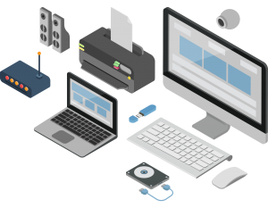

คอมพิวเตอร์ทำงานอย่างเป็นระบบ (System) หมายถึงภายในระบบงานคอมพิวเตอร์ ประกอบด้วยองค์ประกอบย่อยที่มีหน้าที่เฉพาะ ทำงานประสานสัมพันธ์กัน เพื่อให้งานบรรลุตามเป้าหมาย ระบบคอมพิวเตอร์ประกอบด้วยองค์ประกอบสำคัญ 5 ส่วน ดังนี้
1. ฮาร์ดแวร์ (Hardware) คือลักษณะทางกายของเครื่องคอมพิวเตอร์ ซึ่งหมายถึงตัวเครื่องคอมพิวเตอร์ และ อุปกรณ์รอบข้าง (peripheral) ที่เกี่ยวข้อง เช่น ฮาร์ดดิสก์ เครื่องพิมพ์ เป็นต้น ฮาร์ดแวร์ประกอบด้วย

2.ซอฟต์แวร์ (Software) คอมพิวเตอร์ฮาร์ดแวร์ที่ประกอบออกมาจากโรงงานจะยังไม่สามารถทำงานใดๆ เนื่องจากต้องมี ซอฟต์แวร์ (Software) ซึ่งเป็นชุดคำสั่งหรือโปรแกรมที่สั่งให้ฮาร์ดแวร์ทำงานต่าง ๆ ตามต้องการ โดยชุดคำสั่งหรือโปรแกรมนั้นจะเขียนขึ้นมาจาก ภาษาคอมพิวเตอร์ (Programming Language) ภาษาใดภาษาหนึ่ง และมี โปรแกรมเมอร์ (Programmer) หรือนักเขียนโปรแกรมเป็น ผู้ใช้ภาษาคอมพิวเตอร์เหล่านั้นเขียนซอฟต์แวร์ต่าง ๆ ขึ้นมา ซอฟต์แวร์ สามารถแบ่งออกเป็นสองประเภทใหญ่ ๆ คือ
3. บุคลากร (People ware) เครื่องคอมพิวเตอร์โดยมากต้องใช้บุคลากรสั่งให้เครื่องทำงาน เรียกบุคลากรเหล่านี้ว่า ผู้ใช้ หรือ ยูเซอร์ (user) แต่ก็มีบางชนิดที่สามารถทำงานได้เองโดยไม่ต้องใช้ผู้ควบคุม อย่างไรก็ตาม คอมพิวเตอร์ก็ยังคงต้องถูกออกแบบหรือดูแลรักษาโดยมนุษย์เสมอ ผู้ใช้คอมพิวเตอร์ (computer user) แบ่งได้เป็นหลายระดับ เพราะผู้ใช้คอมพิวเตอร์ บางส่วนก็ทำงานพื้นฐานของคอมพิวเตอร์เท่านั้น แต่บางส่วนก็พยายามศึกษาโปรแกรมประยุกต์ในขั้นที่สูงขึ้น ทำให้มีความชำนาญในการใช้โปรแกรมประยุกต์ต่าง ๆ นิยมเรียกกลุ่มนี้ว่า เพาเวอร์ยูสเซอร์ (power user) ผู้เชี่ยวชาญทางด้านคอมพิวเตอร์ (computer professional) หมายถึงผู้ที่ได้ศึกษาวิชาการทางด้านคอมพิวเตอร์ ทั้งในระดับกลางและระดับสูง ผู้เชี่ยวชาญทางด้านนี้จะนำความรู้ที่ได้ศึกษามาประยุกต์และพัฒนาใช้งาน และประสิทธิภาพของระบบคอมพิวเตอร์ให้ทำงานในขั้นสูงขึ้นไปได้อีก นักเขียนโปรแกรม (programmer) ก็ถือว่าเป็นผู้เชียวชาญทางคอมพิวเตอร์เช่นกัน เพราะสามารถสร้างโปรแกรมใหม่ ๆ ได้ และเป็นเส้นทางหนึ่งที่จะนำไปสู่การเป็นผู้เชี่ยวชาญทางคอมพิวเตอร์ต่อไป บุคลากรก็เป็นส่วนหนึ่งของระบบคอมพิวเตอร์ เพราะมีความเกี่ยวข้องกับระบบคอมพิวเตอร์ ตั้งแต่การพัฒนาเครื่องคอมพิวเตอร์ ตลอดจนถึงการนำคอมพิวเตอร์มาใช้งานต่าง ๆ ซึ่งสามารถสรุปลักษณะงานได้ดังนี้ - การดำเนินงานและเครื่องอุปกรณ์ต่าง ๆ เช่น การบันทึกข้อมูลลงสื่อ หรือส่งข้อมูลเข้าประมวล หรือควบคุมการทำงานของระบบคอมพิวเตอร์ เช่น เจ้าหน้าที่บันทึกข้อมูล (Data Entry Operator) เป็นต้น - การพัฒนาและบำรุงรักษาโปรแกรม เช่น เจ้าหน้าที่พัฒนาโปรแกรมประยุกต์ (Application Programmer) เจ้าหน้าที่พัฒนาโปรแกรม (System Programmer) เป็นต้น - การวิเคราะห์และออกแบบระบบงานที่ใช้คอมพิวเตอร์ประมวลผล เช่น เจ้าหน้าที่วิเคราะห์และออกแบบระบบงาน (System Analyst and Administrator) วิศวกรระบบ (System Engineer) เจ้าหน้าที่จัดการฐานข้อมูล (Database Administrator) เป็นต้น - การพัฒนาและบำรุงรักษาระบบทางฮาร์ดแวร์ เช่น เจ้าหน้าที่ควบคุมการทำงานระบบคอมพิวเตอร์ (Computer Operator) เป็นต้น - การบริหารในหน่วยประมวลผลข้อมูล เช่น ผู้บริหารศูนย์ประมวลผลข้อมูลด้วยคอมพิวเตอร์ (EDP Manager) เป็นต้น
4. ข้อมูลและสารสนเทศ (Data / Information) ในการทำงานต่าง ๆ จะต้องมีข้อมูลเกิดขึ้นตลอดเวลา ข้อมูลที่เกี่ยวข้องกับงานที่ถูกเก็บรวบรวมมาประมวลผล เพื่อให้ได้สารสนเทศที่เป็นประโยชน์ต่อผู้ใช้ ซึ่งในปัจจุบันมีการนำเอาระบบคอมพิวเตอร์มาเป็นข้อมูลในการดัดแปลงข้อมูลให้ได้ประสิทธิภาพโดยแตกต่างๆระหว่าง ข้อมูล และ สารสนเทศ คือ ข้อมูล คือ ได้จากการสำรวจจริง แต่ สารสนเทศ คือ ได้จากข้อมูลไม่ผ่านกระบวนการหนึ่งก่อน
5. กระบวนการทำงาน (Procedure) กระบวนการทำงานหรือโพรซีเยอร์ หมายถึง ขั้นตอนที่ผู้ใช้จะต้องทำตาม เพื่อให้ได้งานเฉพาะอย่างจากคอมพิวเตอร์ซึ่งผู้ใช้คอมพิวเตอร์ทุกคนต้องรู้การทำงานพื้นฐานของเครื่องคอมพิวเตอร์ เพื่อที่จะสามารถใช้งานได้อย่างถูกต้อง ตัวอย่างเช่น การใช้เครื่อง ฝาก-ถอนเงินอัตโนมัติ ถ้าต้องการถอนเงินจะต้องผ่านกระบวนการต่าง ๆ ดังนี้